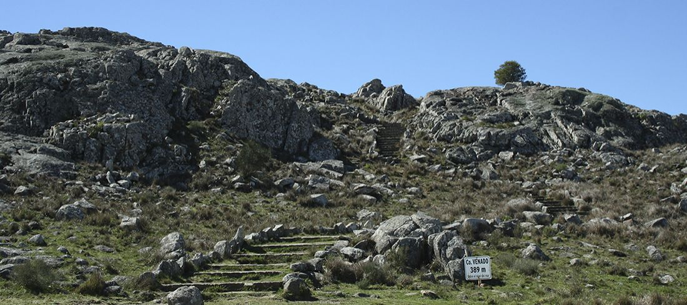

Turismo en tandil

Lago y Dique del Fuerte
Pasarela y mirador en una represa construida en 1951, junto a un lago popular para actividades de kayakismo.
Cerro El Centinela
El cerro El Centinela, a 5 km de la ciudad de Tandil, provincia de Buenos Aires, Argentina; se eleva 298 msnm, y lleva ese nombre por la silueta rocosa que lo corona.
Monte Calvario
El Monte Calvario, el tercero en importancia a nivel mundial, siendo para Tandil uno de los lugares más característicos. Posee una imponente escultura de Cristo en la Cruz, con sus 22 metros de alto, la cual se ve desde varios puntos de la ciudad. También están recreadas las estaciones del Via Crucis.
Fuerte Parque Independencia

El Parque Independencia o Paseo Parque Independencia es un espacio verde de esparcimiento público y gratuito situado sobre un cerro de la ciudad de Tandil, en la zona central de la provincia de Buenos Aires, en el centro-este de la Argentina. Fue inaugurado el 4 de abril de 1923. Gracias a la vista que desde él se obtiene del casco urbano tandilense, resulta ser una de las mayores atracciones turísticas del destino y símbolo asociativo para la ciudad y sus habitantes.
Cristo de las Sierras
El Cristo de las Sierras es un novedoso paseo turístico de la ciudad de Tandil, ubicado sobre una zona de paisaje natural. Inaugurado el 12 de Octubre de 2014, se trata de una propuesta que integra en una única expresión la religiosidad, la naturaleza —con sus imponentes sierras— y la industria metalúrgica local.
Parque Independencia
El Parque Independencia o Paseo Parque Independencia es un espacio verde de esparcimiento público y gratuito situado sobre un cerro de la ciudad de Tandil, en la zona central de la provincia de Buenos Aires, en el centro-este de la Argentina. Fue inaugurado el 4 de abril de 1923. Gracias a la vista que desde él se obtiene del casco urbano tandilense, resulta ser una de las mayores atracciones turísticas del destino y símbolo asociativo para la ciudad y sus habitantes.
Castillo Morisco

En la cima del cerro del Parque Independencia se yergue el llamado “Castillo Morisco”, una donación de la colectividad española residente en Tandil. Este posee un arco, a través del cual deben pasar todos los vehículos al descender del cerro. Una parte de su interior es un tradicional restaurante y confitería, el cual presenta una de sus paredes formada por la propia roca viva y original del cerro. La otra parte del arco cuenta con una escalera que permite subir a la terraza del castillo y contemplar una vista aún mejor, al encontrarse varios metros más alto, y con un ángulo del horizonte más abierto que en el estacionamiento, al no obstruir el recorte que condiciona el propio castillo. Detrás del castillo se encuentra el monumento ecuestre del Brigadier General Martín Rodríguez, quien como gobernador fundó (a solo 1000 metros de allí) el Fuerte Independencia —germen de la actual ciudad— para que sirviese de bastión contra los malones de los indios pampeanos. El autor de esta obra es el escultor Arturo Dresco. En el borde del estacionamiento se pueden observar 2 de los cañones con que desde el Fuerte repelían los ataques de los malones.
Piedra Movediza

La Piedra Movediza de Tandil fue una roca de granito de unas 300 toneladas que se localizaba en la ciudad bonaerense de Tandil, Argentina, que tuvo la particularidad de que logró mantenerse en equilibrio al borde de un cerro hasta su caída definitiva, el jueves 29 de febrero de 1912 entre las 5 y las 6 de la tarde (sin haberse podido determinar el momento exacto) y sin testigos directos de su derrumbamiento.1 Su caída pudo haber sido un acto de vandalismo o producto de las vibraciones provocadas por las explosiones en las canteras cercanas. La piedra original se encuentra en la base del cerro, partida en tres grandes pedazos. Desde 2007 existe una réplica ubicada en el mismo lugar, y que es el mayor símbolo de la ciudad de Tandil. El predio se denomina Parque Lítico La Movediza.
Museo Histórico Fuerte Independencia
Esta institución que prestigia el acervo cultural de la ciudad de Tandil, trabaja directamente a partir del día 20 de Agosto de 1955, cuando un núcleo de voluntades se sumaron para dar origen a la Institución Tradicionalista Fuerte Independencia, cuyos objetivos más claros eran los de presentar nuestro patrimonio cultural y tradicional. Las inquietudes se van trasformando y surge la idea de crear un museo, que se concreta con la posterior inauguración en 1963 a partir de las primeras piezas, donadas por su propio presidente y algunos miembros de la comisión. En la actualidad, la ubicación sigue siendo aquella que eligieron en 1963, sobre la calle 4 de Abril 845, en la antigua casona transformada en un espacio para albergar a más de 10.000 piezas, y brindar un recorrido apasionante donde todos los sentidos se conectan con el pasado. El edificio ha sido objeto de refacciones a lo largo casi medio siglo de vida, en la que se han adecuado sus distintos ambientes para hacer fluido el transitar de los visitantes. La belleza de sus salas invitan a viajar en el tiempo, temáticas diversas son puestas en escena con el objetivo de lograr que todos aquellos que participan en este viaje imaginario, sientan como se construye el presente segmentado el pasado.
Sierra del Tigre
Fue creada en 1973. Se encuentra a seis kilómetros de la ciudad de Tandil, rodeada de las sierras del sistema de Tandilia; la altura máxima es el cerro Venado de 389 m. Tiene una superficie de 150 hectáreas, con una zona de aproximadamente 22 hectáreas en donde se encuentra la Estación Biológica, lugar donde se realiza la cría de especies con fin de repoblar la reserva, y el Centro de Interpretación, donde los visitantes pueden acceder a información relacionada con la actividad de la reserva. Como era una zona de canteras, además de cavas se pueden ver antiguas viviendas y senderos construidos con piedras por los picapedreros.2 El geógrafo Huberto Cuevas Acevedo fue el promotor para que la reserva fuera un hecho, a través de la formación de la «Agrupación Amigos de la Reserva Natural de la Sierra del Tigre», creada el 30 de octubre de 1972.3